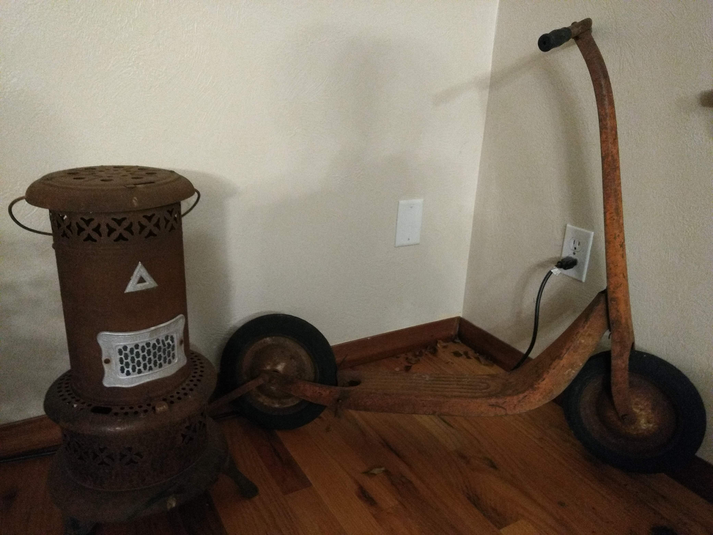
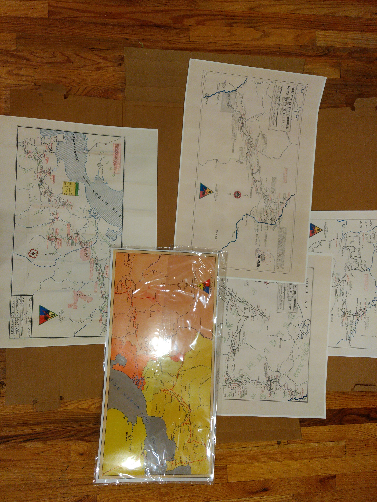

There are two objects of importance shown. These two objects came from my great grandparents, Robert and Anna Dreiling's, house near a small town called Victoria in Kansas. Saldly, this house has been abondoned and is falling apart. We picked these objects to take home.
The object on the left is an old Perfection Oil Heater. My grandparents possibly used this to heat their garage or any other area that needed to be heated.
The object on the right is a very old scooter that was given to the all of the kids, including my grandma, to play with. The large wheels allowed them to ride it on the dirt driveway of their house.

My great grandpa, Anton Suppes (We called him Tony), was a tank driver in World War II.
These are maps of his routes. These are what he used to lead his platoon to the places they needed to go.